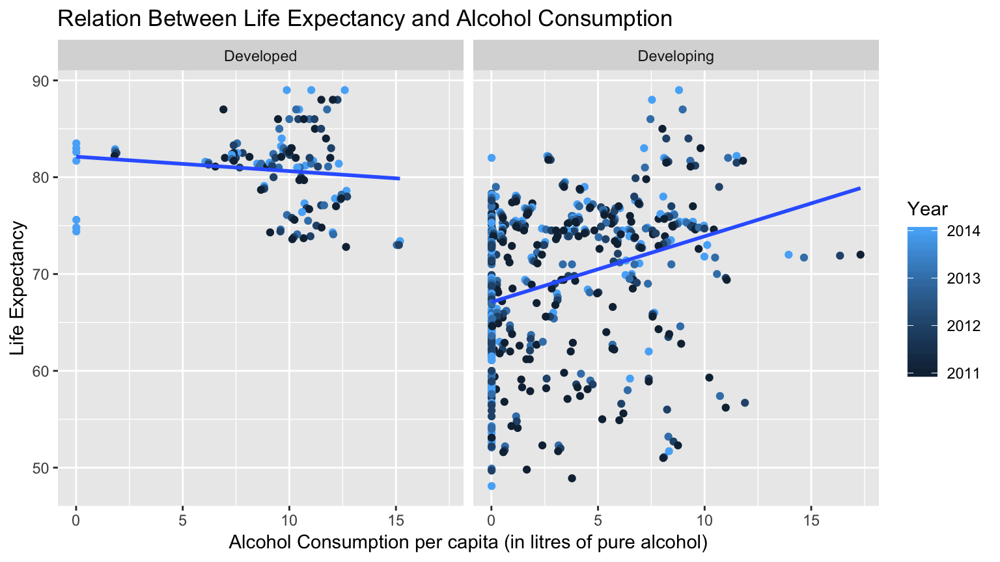
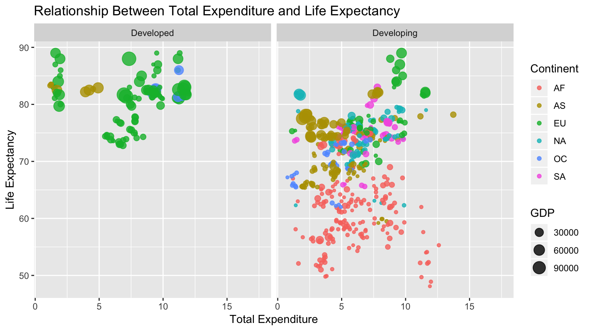
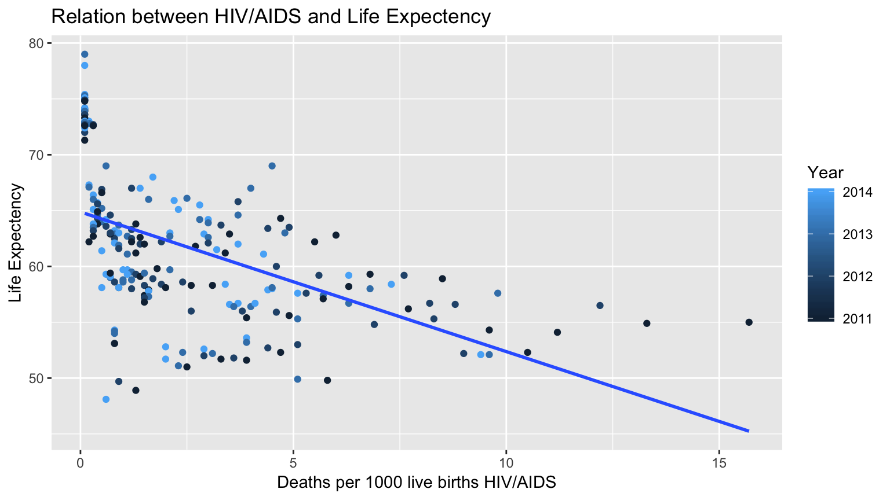

With the big disparity of the life expectancies in different regions, the question that what determines how long people live remains controversial and popular in debate. We explored three main factors: alcohol consumption, total expenditure, and HIV/AIDS to see their relationship with the life expectancies.
# Loading the necessary packages
library(tidyverse)
# Reading in datasets
life_expectancy <- read.csv("Life Expectancy Data.csv")
continents <- read.csv("countries and continents.csv")
coordinates2 <- read.csv("coordinates2.csv")
# Choosing important variables from the continents dataset
continents <- continents %>%
select(official_name_en, Continent, Capital) %>%
rename(Country = official_name_en)
# renaming the NA with "NA" and join the data frame
life_expectancy_continents <-
full_join(continents, life_expectancy, by = "Country") %>%
mutate(
Continent = as.character(Continent),
Continent = ifelse(is.na(Continent), "NA", Continent)
)This first scatterplot shows us the link between alcohol consumption and the average life expectancies of every country in the four years from 2011 to 2014. For developed countries, a low amount of alcohol consumed correlates to a higher life expectancy but on a larger scale, this is mostly constant due to the almost horizontal slope. Whereas the trend for developing countries is the opposite: the high alcohol consumption is positively proportional to life expectancy — and this is a much steeper curve which signifies great variance in the life expectancies. According to Alcohol.org 1, drinking moderate amounts of alcohol can actually lower the risk of heart disease which might be the cause of the positive trend!
# Filter the observations from year 2011 to 2014
year_2011_2014 <- life_expectancy_continents %>%
filter(Year%in%c(2011,2012,2013,2014))
# Graph linking alcohol content with life expectancy
ggplot(year_2011_2014, aes(x = Alcohol, y = Life.expectancy, color = Year)) +
facet_wrap(~Status) +
geom_point() +
geom_smooth(method = "lm", se = FALSE) +
labs(title = "Relation Between Life Expectancy and Alcohol Consumption",
x = "Alcohol Consumption per capita (in litres of pure alcohol)",
y = "Life Expectancy")
The second graph shows the relationship between total expenditure (general government expenditure on health as a percentage of total government spending) and the life expectancy of different continents, with the size of the points representing the GDP (gross domestic product per capita) of the countries. As we can see, for the developing countries, there is a positive trend that with the total expenditure increases, the life expectancies also increase, mostly illustrated by African countries. For the developed countries, there is no distinct trend for these: regardless of how much government spending devoted to health, the life expectancies are still high and stable. The developed countries and developing countries in Europe and Asia have higher life expectancies due to their higher GDP illustrated by the bigger point sizes.
For developing countries, the positive relationship corresponds to the assumption that when the countries are having higher GDP and government spending, the people in those countries benefit from better living standard and enjoying longer life expectancy.
# Graph linking the gdp with the life expectancy
ggplot(year_2011_2014,
aes(x = Total.expenditure,
y = Life.expectancy,
color = Continent,
size = GDP))+
geom_point(alpha = 0.8)+
facet_wrap(~Status)+
labs(title = "Relationship Between Total Expenditure and Life Expectancy",
x = "Total Expenditure", y = "Life Expectancy")
This third plot shows the negative linear relationship of the Deaths per 1000 live births due to HIV/AIDS and the life expectancy of the African continent between 2011 and 2014. In the other continents, using this as a predictor of life expectancy is non-conclusive due to the death rate being below 1. In Africa, the number of death per 1000 live birth by HIV/AIDS is scattered between 1 to 15, along with smaller life expectancy of around 60 for most countries (much lower than the global average!). The regression line helps in understanding this relationship: the lower the life expectancy of the country, the greater the death rate. This goes to show that having HIV/AIDS in infancy can cause a lot of deaths and consequently, lower the national average life expectancy.
# HIV/AIDS and life expectancy have a linear relationship in Africa
af<- year_2011_2014 %>% filter(Continent == "AF")
ggplot(af, aes(x = HIV.AIDS, y = Life.expectancy, color = Year)) +
geom_point() +
geom_smooth(method="lm",se=FALSE) +
labs(title = "Relation between HIV/AIDS and Life Expectency",
x = "Deaths per 1000 live births HIV/AIDS",
y = "Life Expectency")
As the three visualizations showed, for developing countries, when alcohol consumption increases, the life expectancy also increases, partly because of the positive effects of drinking appropriate amounts of alcohol brought to health. Also for developing countries, the life expectancy increases when the percentage of government spending on health increases, but the trend is not obvious for developed countries- they have a high and stable life expectancy. Specifically, diseases like HIV and AIDS is a big factor lowering the life expectancy of developing countries, especially in Africa. The higher number of death per 1000 live births HIV/AIDS in the country, the lower the life expectancy. So overall, there isn’t a specific reason as to why life expectancy varies around the world- a lot of other factors make up the average numbers quoted in data repositories!
Dataset 1 Life Expectancy: The data used was accessed from Kaggle.com. This dataset was made using the Missmap command in R by Kumar Rajarshi with help from Deeksha Russell and Duan Wang. The data set came from the Global Health Observatory (GHO) data repository under the World Health Organization (WHO), which related to life expectancy, health factors for 193 countries, while the corresponding economic data was collected from the United Nation website. It evaluates these factors over the time period from 2000 to 2015 but for more clarity, we filtered this to compare the data over the most recent four years. 2
Dataset 2 Continents: This data was accessed from Kaggle.com where user @folaraz originally accessed it from https://old.datahub.io/. It gives us information about the names, continents, capital, official language, among many others. We used this dataset mainly to sort the countries by their respective continents. 3
Dataset 3 Coordinates: This dataset was accessed from data.world for the coordinates of the world countries. Data originates from API Highways 4
Alcohol.org. (2018, December 16). Global Drinking Demographics.↩
Rajarshi, K. (2018, December 16). WHO and United Nations. Statistical Analysis on factors influencing Life Expectancy↩
Folaraz. (2018, December 16). World Countries and Continents Details↩
API Highways. (2018, December 16). Country Geographic Coordinates Summary↩